| 日付 | 2022年2月6日（日） |
|---|---|
| 山域 | 奥多摩 |
| メンバー | 家族（妻、長女・10歳、長男・8歳） |
| 山行形態 | 子連れ日帰り |
| アクセス | 車 |
| ルート (Map) | 青梅駅 (7:53) - (8:05) 鉄道公園 - (9:33) 矢倉台 - (10:10) 宮ノ平駅 - (10:43) 登山口 - (11:37) 天狗岩 (11:57) - (12:09) 赤ぼっこ山 (12:30) - (12:44) 馬引沢峠 - (12:58) 二ツ塚峠 - (13:37) 天祖神社 - (14:22) 青梅駅 |
最近息子のスポーツクラブの練習が忙しく、なかなか山に行けない。
土曜が練習で日曜は自主練なのだが、なんだかんだで付き合わされる。
たまには山に行こうと言って、自主練を休んで山に行くことにする。
冬型の気圧配置で寒くなる予報のため、あまり遠出はせずに
近場の山からそこそこ長く歩けるコースを組める赤ぼっこ山に行くことにする。
青梅駅近くの有料駐車場に車を停める。標高200m。
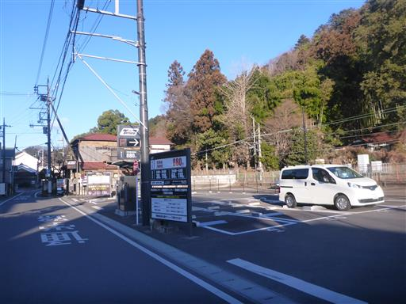
まずは青梅駅に移動。
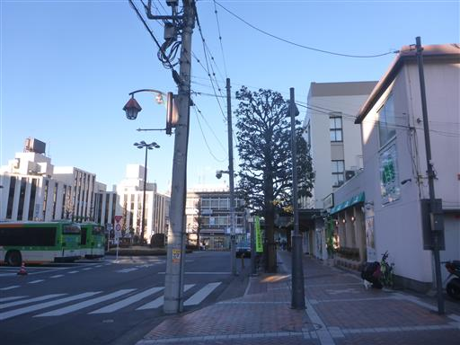
街中を歩いていく。巨大な猫の顔が気になる…
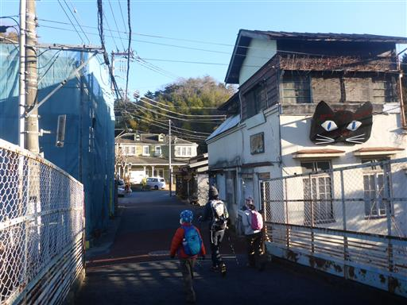
青梅鉄道公園の側を通過する。
昔、お出かけ先リストの候補に入れたことはあったが、
息子はあまり電車に興味を示さず、結局訪問することはなかった。
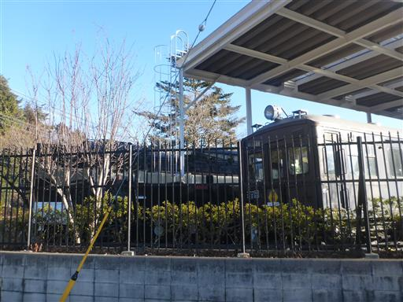
本日のルートは青梅をぐるっと一周するコース。
まずは青梅丘陵を西に向かう。
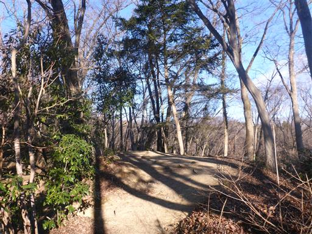
青梅丘陵は車が通れるくらい広い道がずっと通っており、
そのすぐ近くを登山道っぽい道が通っている。
度々2つの道は離合を繰り返すが、基本的に登山道を忠実に歩いていく。
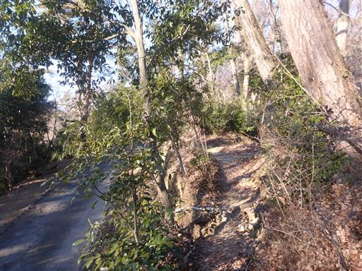
第一休憩所に到着。
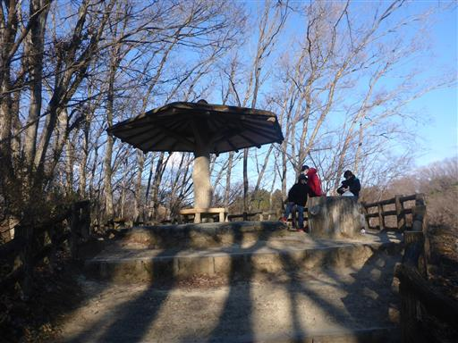
本日は快晴。
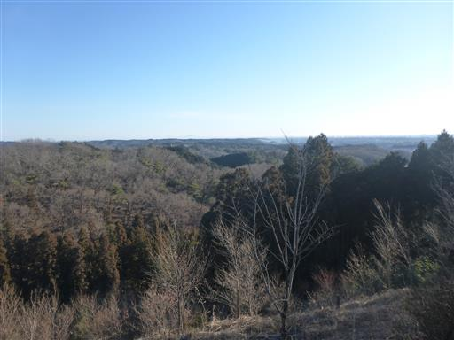
遠く筑波山が見えている。
その手前に見えているのは塩船観音寺の仏像だ。

関東平野。鉄塔がたくさん並んでいる。
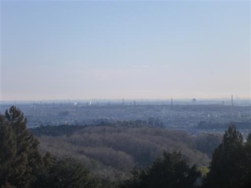
青梅丘陵を西進する。
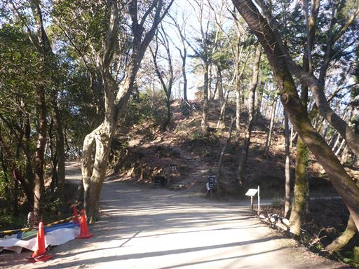
突然、仏舎利塔が現れる。
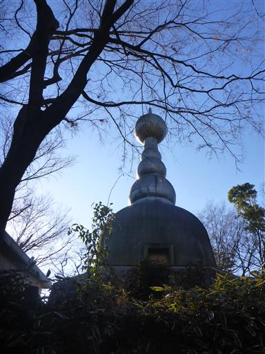
周囲の景色が杉の植林になる。
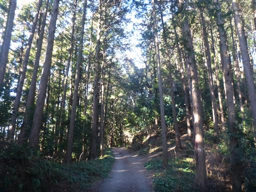
第三休憩所。なぜか屋根に傘が刺さっている。
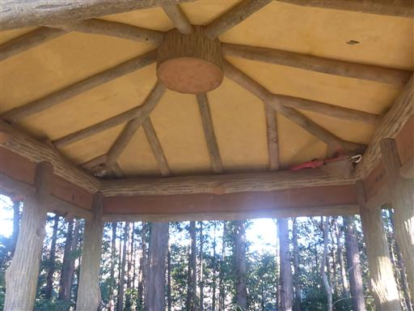
石仏が並んでいる。右の石仏だけ、頭が入れ替わっている。
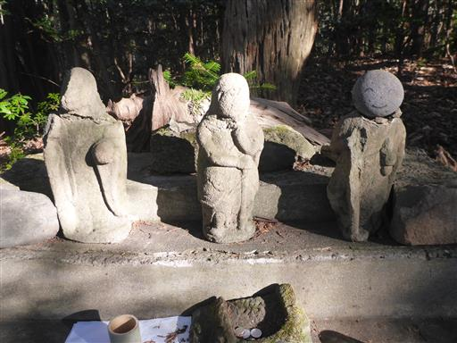
第四休憩所に到着。
この休憩所は巻道コースと稜線コースが合わさったところにあるため、
そこそこ人が集まっている。
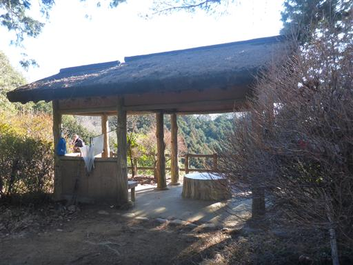
ここからは照葉樹林帯。
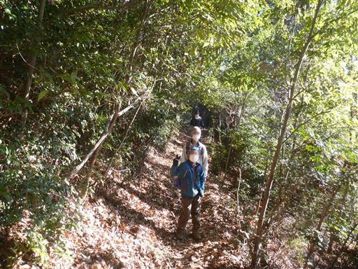
防火水が凍り付いていたため、ストックで突っついて遊ぶ。
氷の厚さは1cm弱だ。
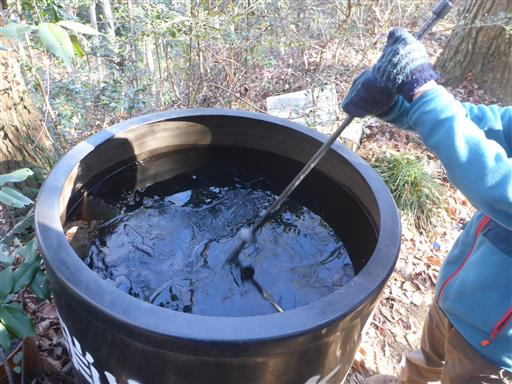
矢倉台に到着。展望の良いこの場所は、昔、物見櫓が築かれていたらしい。

青梅市街方面を見渡す。
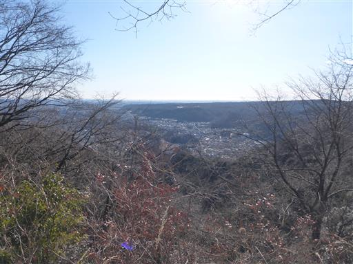
奥多摩方面の山々。遠くに見える目立つピークは大岳山。
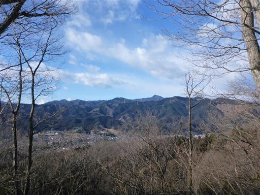
ここから稜線を離れて下山道を歩く。
歩く人が多いのか、この道もよく整備されている。
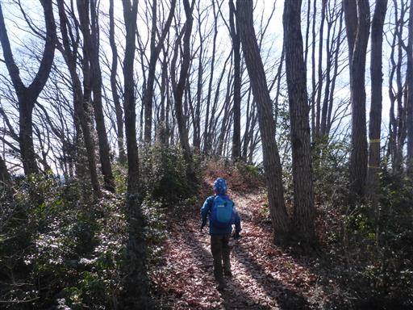
青梅丘陵を下山。
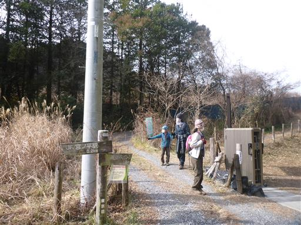
宮ノ平駅に到着。ここで線路を渡って駅の反対側に移動。
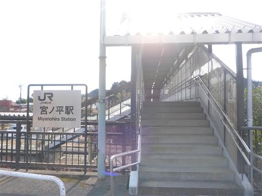
続いて多摩川を渡る。
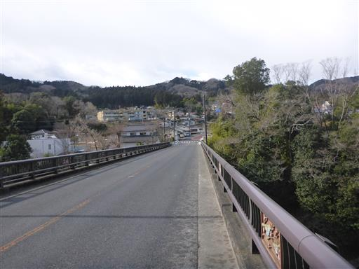
白い砂浜が美しい。かなり上流まで来ているので川の流れは細い。
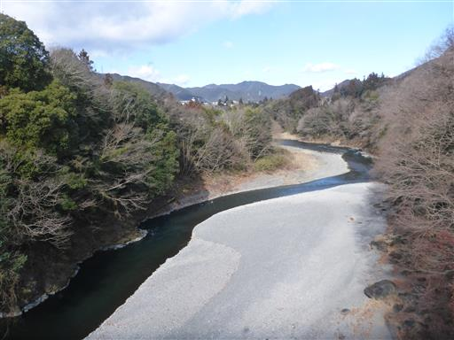
しばらく車道を歩くと登山口に到着する。
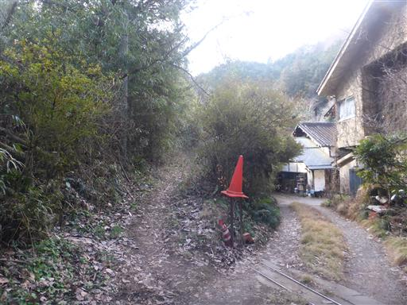
歩き始めてすぐのところに、なぜか氷の塊がある。
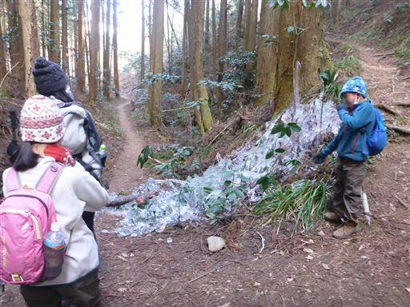
茎のある所には氷柱ができている。おそらくパイプが破裂して水が噴き出したのだろう。
10mくらい先までつららができている。
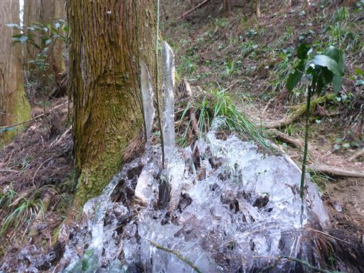
稜線に到達。ここからは尾根道を歩いていく。
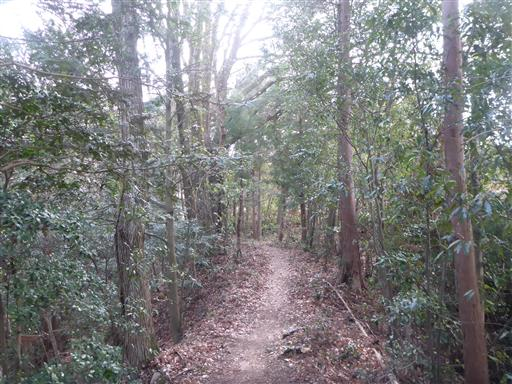
天狗岩に到着。
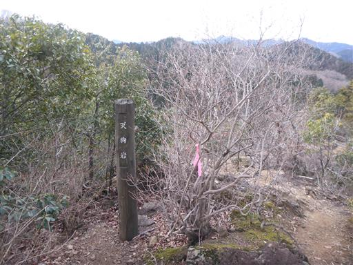
岩の先端は展望台になっている。青梅の西の方の街並みが見渡せる。
手前の赤い橋が渡ってきた橋だ。
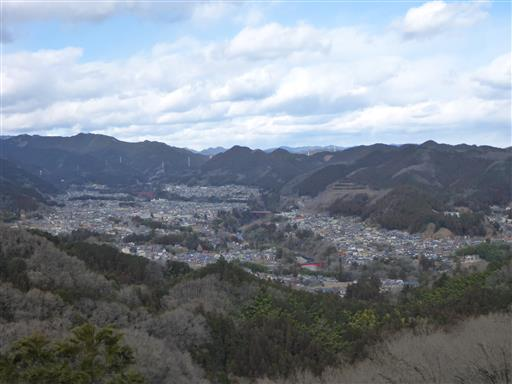
再び稜線を東へ。
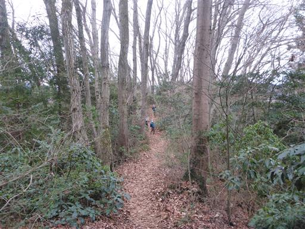
続いて赤ぼっこ山に到着する。標高410m。
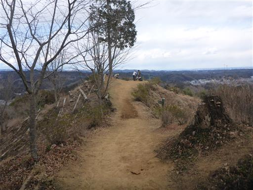
関東大震災により表土が流失し、赤い土が露出したらしい。
山頂は少し埃っぽい。
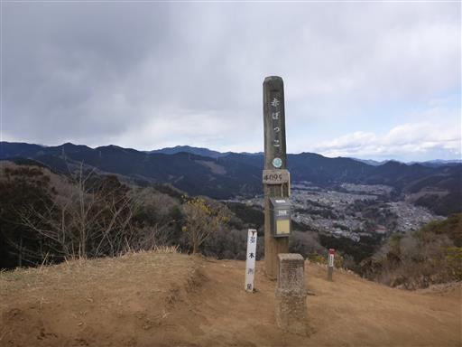
山頂標識の足元にはまっくろくろすけが大量に置かれている。
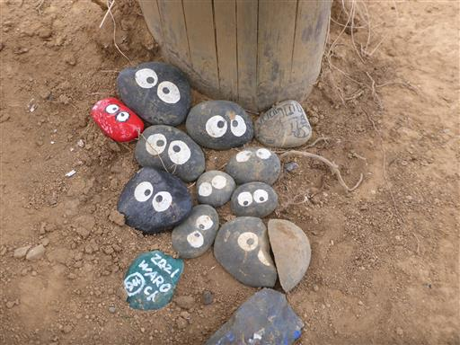
山頂にはポツリと一本だけ木が立っている。
それ以外に視界を遮るものが無く展望は非常に良いが、残念ながらだいぶ雲が出てきた。
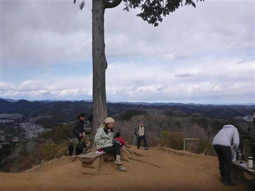
山頂を出発してしばらく歩くと、道端に馬頭観音が祀られている。
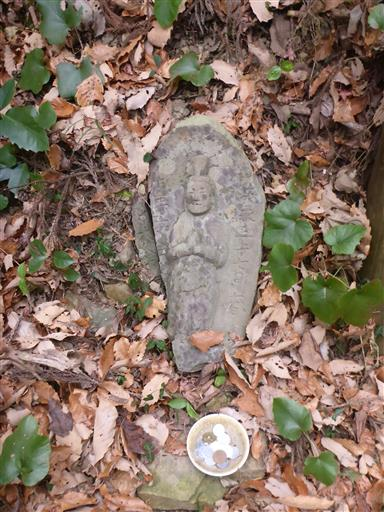
馬引沢峠に到着。
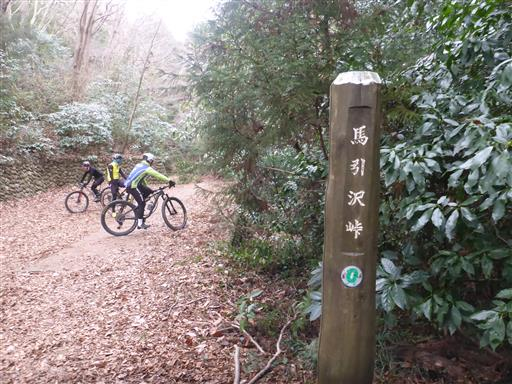
右側はゴミ処分場になっていて、ずっとフェンスが続いている。
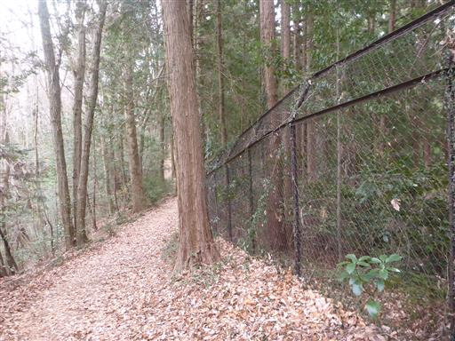
二ツ塚峠に到着。ここから青梅駅に下山する。
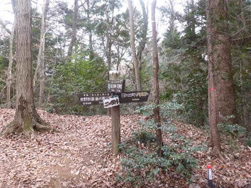
眼下に青梅墓地公園が見えてきた。
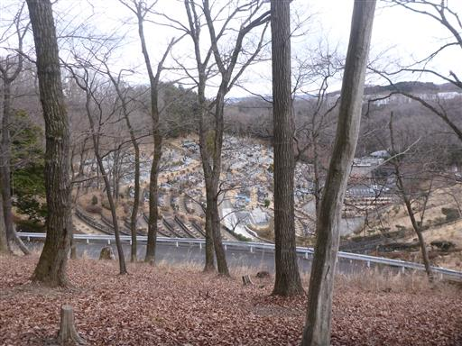
少し車道を歩くが再び登山道に。
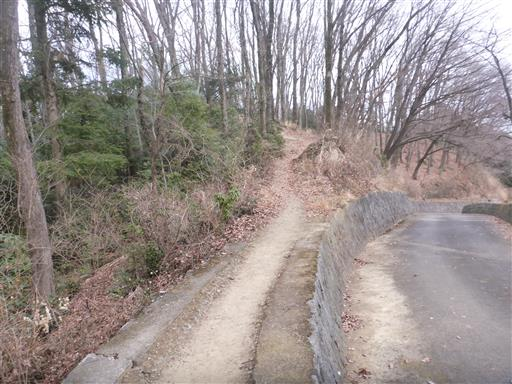
変わり映えのしない登山道を下って行くと天祖神社に到着する。
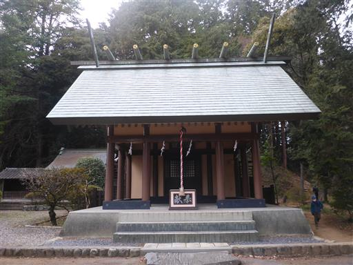
豆がたくさんまかれている。
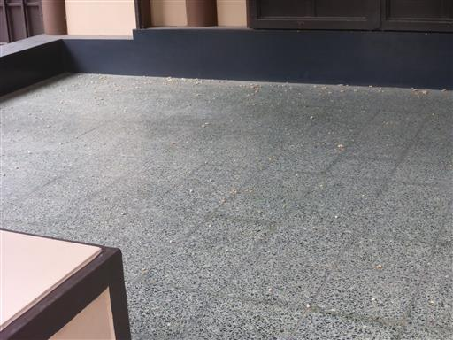
神社に続いている、転げ落ちそうな長い急階段を下る。
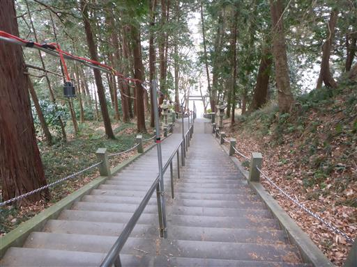
下山。再び多摩川を渡って青梅駅を目指す。
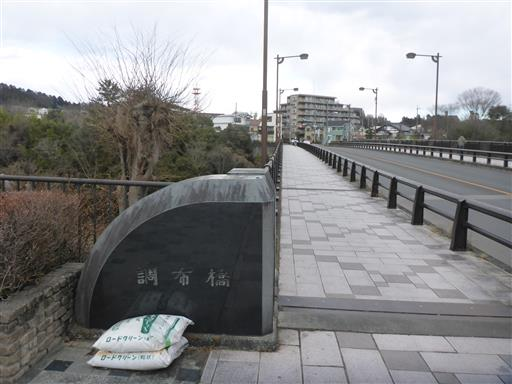
和菓子屋に立ち寄って、帰りの車で食べるお菓子を購入。
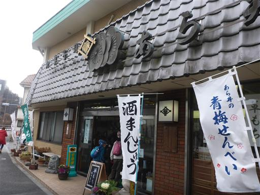
青梅駅前に戻ってくる。青梅ではレトロな街並みを復元しているようだ。
青梅丘陵と赤ぼっこ山、アップダウンはあまりなかったが、
二つの山に登ったため、そこそこ歩きごたえがあった。
展望が良い箇所が所々にあったが、昼前から雲が増えて日差しがなくなったのが残念だった。
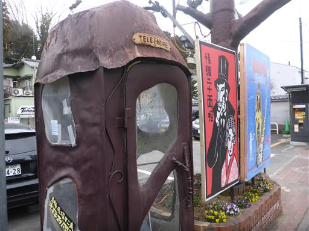